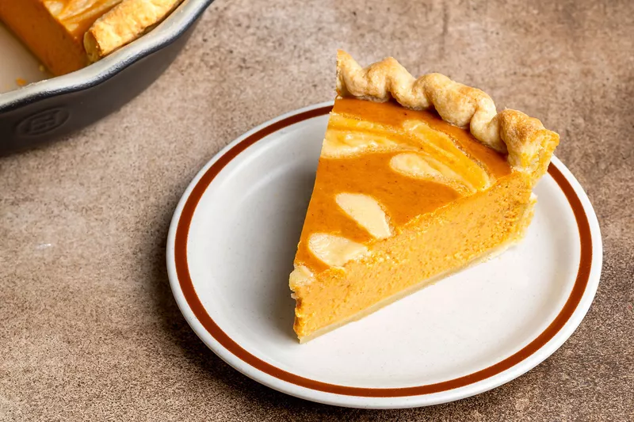

Pumpkin Pie

Pumpkin pie is a dessert pie with a spiced, pumpkin-based custard filling. The pumpkin and pumpkin pie are both a symbol of harvest time, and pumpkin pie is generally eaten during the fall and early winter.
- 3/4 cup sugar
- 1 1/2 teaspoons pumpkin pie spice
- 1/2 teaspoon salt
- 1 can (15 oz) pumpkin (not pumpkin pie mix)
- 1 1/4 cups evaporated milk or half and half
- 2 eggs, beaten
- 1 crust from 1 package (12 oz) frozen Pillsbury™ Deep Dish Pie Crusts (2 Count)
Important Steps
- Mix up crust ingredients
- Wrap up and chill crust for 45 minutes
- Mix up and cook filling ingredients on stove top
- Strain filling
- Roll out pie dough, and place in pie pan, chill for 15 minutes
- Continue straining filling, if necessary
- Cook pie crust for 10 minutes with weights, 5-10 minutes without
- Pour filling into crust
- Bake at 400 F for 10 minutes, 300 F until done
- Cool for approximately 2 hours
- Eat